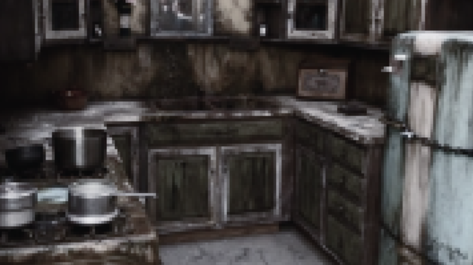

The Kitchen

As you are exploring the first floor of the mansion, you run across the kitchen with blood stains all over the counters and maggots in the sink. What do you do next?
As you are exploring the first floor of the mansion, you run across the kitchen with blood stains all over the counters and maggots in the sink. What do you do next?